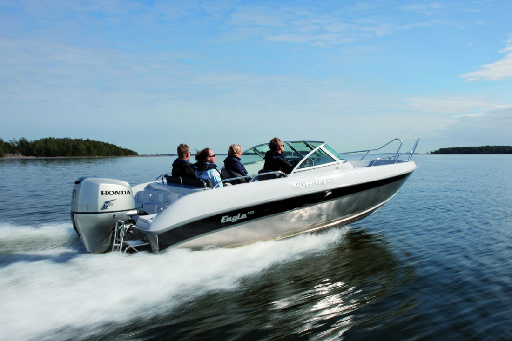

Катер Silver Eagle DC 630 (Сильвер Игл DC 630)
Silver Eagle (Сильвер Игл) всегда привлекает внимание на стоянках и открытых водах. Компания из шести человек удобно разместиться на катере во время прогулки или ловли рыбы.
И без слов ясно, что Silver Eagle (Сильвер Игл) — это катер, на котором можно выходить в прибрежные морские воды. Катер обладает прекрасными ходовыми свойствами, демонстрируя одновременно скорость и плавное движение. Массивный алюминиевый катер прост и удобен в обслуживании. Благодаря своим размерам он надёжен в управлении и при отнюдь неблагоприятной погоде, особенно осенью. Silver Eagle (Сильвер Игл), несомненно, относится к открытым катерам класса люкс и по многофункциональности является одним из лучших на рынке.
Технические характеристики катера:
| Параметр | Silver Eagle DC 630 |
|
Длина |
6.30 м |
|
Ширина |
2.40 м |
|
Масса |
810 кг |
|
Рекоменд. мощность двигателя |
90-225 л.с. |
|
Вместимость |
6 человек |
|
Высота надводного борта |
0.67 м |
|
Высота транца |
0.63 м |
|
Осадка |
0.30 м |
|
Угол килеватости на транце |
18.5° |
|
Макс.скорость |
83 км/ч |
Стандартное оборудование:
- ходовые огни, якорный огонь;
- чехол для аккумулятора с кабелями;
- соответствующая нормам ЕС конструкция, открытое помещение со сливом воды;
- бортовые поручни из нержавеющей стали;
- лестница для купания из нержавеющей стали;
- гидроусилитель рулевого управления;
- вращающиеся, регулируемые мягкие сидения;
- распределительная панель предохранителями;
- разнообразные отсеки для хранения вещей;
- указатель уровня топлива;
- топливный фильтр;
- топливный бак ёмкостью 140 л.;
- выключатель массы;
- огнетушитель;
- ячейка для хранения мелких предметов;
- напряжение бортовой сети 12 В;
- транцевые плиты с индикатором положения;
- ветровое стекло с центральной дверцей;
- тент ходовой.
Дополнительное оборудование
Комплект мягких подушек на сиденья,
Транспортировочный тент,
Ходовой тент
{kind=link}
{kind=link}
{kind=link}
{kind=link}